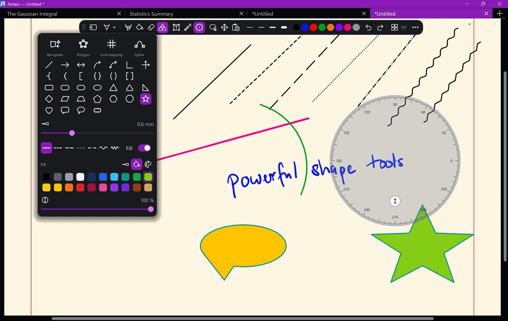

Shapes
More than 30 shapes, from lines and arrows to stars and speech bubbles. Or sketch by hand and let Noteic recognize the shape.

Draw a shape#
- Tap Shapes in the toolbar. The shapes menu opens.
- Pick a shape, a line width and a line style.
- Drag on the page from one corner to the other.
Hold Shift while you drag: lines and arrows snap to 45°, a rectangle becomes a square, an ellipse a circle, and every other shape gets equal width and height.
All shapes#
- Lines: line, arrow, double arrow, curved arrow, curved double arrow, angle and axes.
- Brackets: curly, round and square, as one bracket or as a pair around the area you drag.
- Areas: rectangle, rounded rectangle, capsule, ellipse, triangle, rounded triangle, right triangle, diamond, parallelogram, isosceles trapezoid, pentagon, hexagon, octagon, star and heart.
- Callouts: square and rounded speech bubble, and a wavy frame.
Drawing modes#
The top row of the menu changes how you draw:
- Recognize: draw freely. When you lift the pen, a line, circle, ellipse, triangle, rectangle or polygon becomes a clean shape. Draw from one shape's outline to another's and you get a clean connector. If nothing is recognized, your stroke stays as ink.
- Polygon: tap corner by corner; a tap on the first corner closes it. Esc discards it.
- Grid snapping: straight lines whose ends snap to the paper grid and to the corners of other shapes, at 0°, 45° or 90°.
- Spline: tap to set points, drag while setting a point to shape the curve. Tap the first point to close it, or release Esc to finish.
Tap any shape in the list to go back to plain dragging.
Line, fill and color#
- Line: width from 0.1 to 2 mm.
- Seven line styles: Solid, Dashed, Long dashes, Dotted, Dash-dot, Wavy and Zigzag.
- Fill: fills closed shapes. Switch between Outline and Fill to give each its own color, and set the fill opacity from 5% to 100%.
- 20 colors, plus a custom color picker with a Hex box.
Change a shape later#
Select it with the lasso. Drag the frame to move, scale or rotate it, drag its point dots to reshape it, and use Style in the selection bar to change width, line style, fill and color.